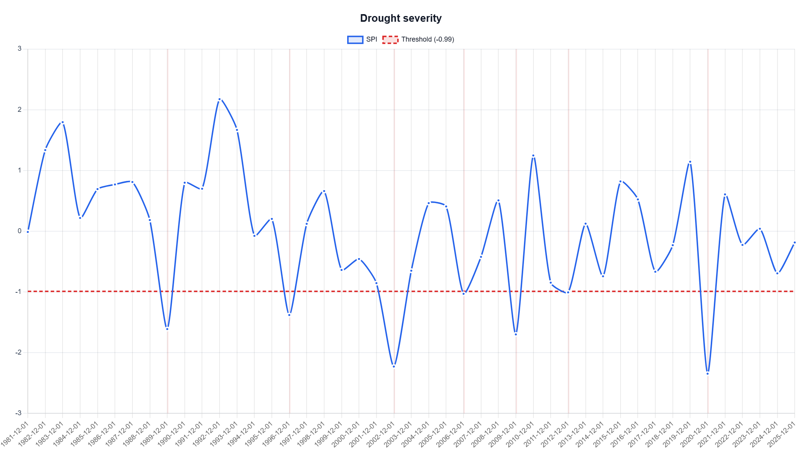
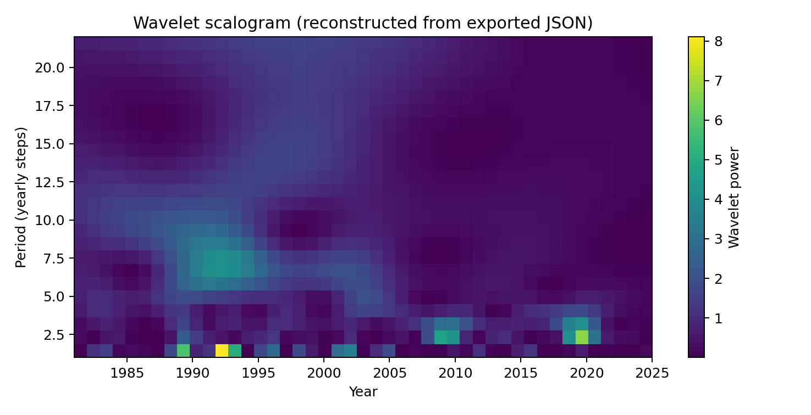

Station metadata and setup
| Item | Value |
|---|---|
| Analysis location | Flagstaff-area point (35.1983, -111.6513) |
| Data source | NASA POWER point-based yearly total precipitation |
| Drought index | SPI, yearly / SPI-12 calendar-year interpretation |
| Analysis period | 1981-01-01 to 2025-12-31 |
| Baseline | Same as analysis period |
| Severity threshold | SPI <= -0.99 |
| Purpose of this draft | Location-level evidence for comparing chart-only ChatGPT interpretation with DMAP-AI structured-request ChatGPT interpretation |
1. Drought severity interpretation
Selected chart: Drought severity — SPI line with shaded events.

1.1 Method A: ChatGPT chart-only interpretation
The severity chart shows that drought conditions at the Flagstaff-area point are episodic rather than continuously persistent. Several isolated negative SPI years appear below the drought threshold, with the most visually prominent dry years occurring around 2002 and 2020. The chart suggests that the drought events are mostly short-lived annual events rather than long multi-year drought periods. From the chart alone, ChatGPT can identify the major drought episodes and the general timing of severe or extreme dry years, but it cannot reliably extract exact event magnitudes, minimum SPI values, or the formal event count without the underlying table.
1.2 Method B: ChatGPT interpretation using DMAP-AI structured severity request
The DMAP-AI structured request provides the event table, threshold, category method, and SPI calculation metadata. Using the SPI <= -0.99 event threshold, the Flagstaff-area analysis contains 7 drought events during 1981-2025. Each event lasts one yearly step, so the record indicates repeated isolated annual drought years rather than sustained multi-year drought persistence.
| Event | Period | Duration | Min SPI | Magnitude | Class |
|---|---|---|---|---|---|
| 1 | 1989 | 1 | -1.611 | 0.621 | Severe |
| 2 | 1996 | 1 | -1.380 | 0.390 | Moderate |
| 3 | 2002 | 1 | -2.228 | 1.238 | Extreme |
| 4 | 2006 | 1 | -1.031 | 0.041 | Moderate |
| 5 | 2009 | 1 | -1.699 | 0.709 | Severe |
| 6 | 2012 | 1 | -1.007 | 0.017 | Moderate |
| 7 | 2020 | 1 | -2.346 | 1.356 | Extreme |
The most severe drought event is 2020, with SPI = -2.346 and magnitude = 1.356, classified as extreme drought. The second strongest event is 2002, with SPI = -2.228 and magnitude = 1.238, also classified as extreme drought. Severe drought also appears in 1989 and 2009. Because every event has duration = 1 yearly step, the structured request clarifies that the key severity message is not long persistence, but repeated isolated annual drought extremes.
1.3 Severity method comparison
| Evaluation item | Chart-only ChatGPT | DMAP-AI structured-request ChatGPT | Improvement |
|---|---|---|---|
| Worst drought | Can visually identify strong dry years near 2002 and 2020. | Identifies 2020 exactly as the worst event, SPI = -2.346, magnitude = 1.356. | Higher precision. |
| Event duration | May infer short events visually, but exact durations are uncertain. | Shows all 7 drought events lasted one yearly step. | Prevents overstatement of persistence. |
| Event count | Difficult to count reliably from chart alone. | Provides 7 drought events and 7 drought years. | More reproducible. |
| Severity classes | Can estimate severe/extreme years visually. | Uses Classic SPI thresholds and reports moderate/severe/extreme classes. | Better method transparency. |
| Hallucination risk | Could over-describe persistent drought if interpreting shaded periods loosely. | Constrains interpretation to threshold, event table, and SPI metadata. | Lower overclaiming risk. |
2. Wavelet / periodicity interpretation
Selected chart/context: Wavelet scalogram (power vs time and period).

Note: This figure was reconstructed from the exported wavelet power matrix because the ZIP did not contain a wavelet_scalogram.png chart image.
2.1 Method A: ChatGPT chart-only interpretation
The scalogram visualization suggests that SPI variability is concentrated in several time-period bands rather than being uniformly distributed across all periods. A chart-only interpretation can describe where stronger wavelet power appears visually and may identify a mid-period band as important. However, the visual chart alone is vulnerable to overinterpretation: without numeric ranking, reliability values, or caution flags, ChatGPT may describe a visible band as a drought cycle even though wavelet power only indicates time-frequency variability.
2.2 Method B: ChatGPT interpretation using DMAP-AI structured wavelet request
| Rank | Period | Power | Coherence | Reliability | Caution |
|---|---|---|---|---|---|
| 1 | 6.478 | 1.149 | 0.989 | 0.979 | No extra caution. |
| 2 | 7.391 | 1.075 | 0.987 | 0.912 | No extra caution. |
| 3 | 1.000 | 1.050 | 0.987 | 0.889 | No extra caution. |
| 4 | 5.565 | 1.032 | 0.987 | 0.875 | No extra caution. |
| 5 | 2.826 | 0.974 | 0.989 | 0.829 | No extra caution. |
| 6 | 1.913 | 0.943 | 0.992 | 0.808 | No extra caution. |
| 7 | 8.304 | 0.945 | 0.983 | 0.794 | No extra caution. |
| 8 | 22.000 | 0.855 | 0.999 | 0.743 | Interpret cautiously. |
The structured request identifies the highest-power and best reliable wavelet peak at approximately 6.48 yearly steps, with power = 1.149, coherence = 0.989, and reliability = 0.979. Nearby ranked bands around 5.57 and 7.39 yearly steps suggest a broader mid-period variability band of roughly 5.5-7.5 years. The structured request also identifies a 22-year band, but flags it for long-period low support, meaning it should be interpreted cautiously in a 45-year record.
The correct interpretation is that the Flagstaff-area SPI series contains a prominent mid-period variability signal, strongest near 6.5 yearly steps. This should not be converted into a deterministic statement that drought will recur every 6-7 years. The wavelet result is diagnostic of historical variability, not a forecast rule or proof of a physical cause.
2.3 Wavelet / periodicity method comparison
| Evaluation item | Chart-only ChatGPT | DMAP-AI structured-request ChatGPT | Improvement |
|---|---|---|---|
| Dominant band | May notice stronger power in a mid-period band visually. | Identifies strongest reliable peak at about 6.48 yearly steps. | Numeric dominance. |
| Nearby bands | Difficult to rank visually. | Reports adjacent high-ranked bands near 5.57 and 7.39 years. | Better spectral context. |
| Uncertainty | May not mention record-length limits. | Flags the 22-year band as long-period / low-support. | Better caution. |
| Cycle wording | May call the peak a recurring drought cycle. | Frames the result as a variability band, not a deterministic recurrence interval. | Lower hallucination risk. |
| Causality | Could infer climate drivers without evidence. | Limits interpretation to wavelet variability and method notes. | More scientifically disciplined. |
3. Location-level research conclusion
For the Flagstaff-area point, the severity task shows that chart-only interpretation can identify the visually obvious extreme drought years, but the structured DMAP-AI request provides the exact event table needed to distinguish severity, magnitude, and duration. The structured interpretation is especially useful for showing that all detected drought events are single-year events, so the main severity pattern is episodic annual drought rather than sustained multi-year persistence.
For the wavelet task, the structured request provides the stronger contribution. It identifies a dominant mid-period variability band near 6.5 yearly steps and gives reliability metrics and caution flags that are not available from a simple chart-only reading. This supports the paper hypothesis that DMAP-AI structured requests reduce overinterpretation by guiding ChatGPT away from unsupported cycle, forecast, or causal claims.
Back to topAppendix: Key values extracted from the Flagstaff export
| Metric | Value |
|---|---|
| Total drought events | 7 |
| Worst event | 2020; SPI = -2.346; magnitude = 1.356; extreme drought |
| Second strongest event | 2002; SPI = -2.228; magnitude = 1.238; extreme drought |
| Longest event duration | 1 yearly step for all events |
| Highest-power wavelet peak | 6.48 yearly steps |
| Best reliable wavelet peak | 6.48 yearly steps; reliability = 0.979 |
| Important wavelet caution | Long-period band near 22 years is flagged as low-support / interpret cautiously |